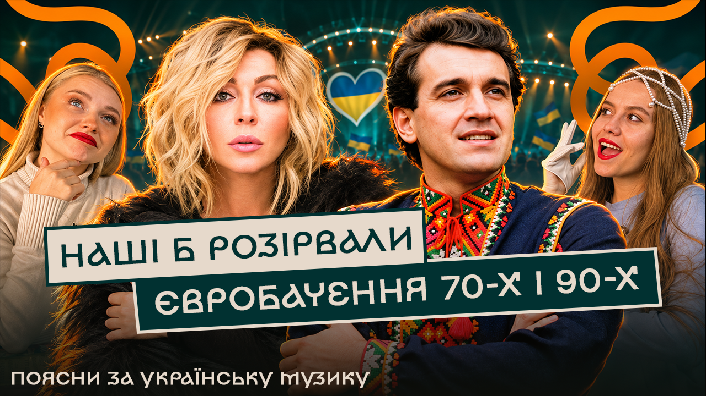
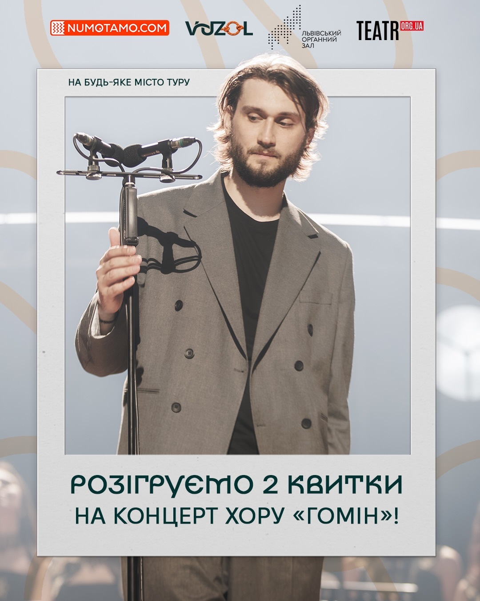

Зберігаємо історії
Відео й тексти про музикантів, пісні, події та явища, які впливали на культуру. Усі матеріали — у соцмережах VUZOL.
Розповідаємо про людей, пісні й події, що творили українську музичну культуру — щоб її не згадували лише з нагоди пам’ятних дат.



VUZOL — українське онлайн-медіа про історію української музики, яке вже понад 4 роки створює для українців. Ми розповідаємо про музику, її історію та людей, які її творили, — щоб про них знали, говорили, сперечалися, а їхню музику слухали не лише з нагоди пам’ятних дат. Наша головна мета — сплітати людей музикою та її історією.
Відео й тексти про музикантів, пісні, події та явища, які впливали на культуру. Усі матеріали — у соцмережах VUZOL.
Офлайн- і онлайн-події, де традицію можна відчути на дотик, смак, слух, мозком, серцем і душею.
Музичні еліаси, розіграші квитків, лекції та плейлисти для тих, кому цікаво відкривати українське разом.
Струшуємо пил із бронзових пам’ятників музикантів минулого й показуємо їх насамперед як людей. Говоримо про те, що зазвичай залишається поза увагою медіа про культуру.
Усі випуски«(Не)знищені: музиканти, яких боявся СРСР» поєднає експедиції, журналістські дослідження та відеоконтент. Запланований вихід — весна–літо 2027 року.
Стежити за проєктом YouTube · нове відео
YouTube · нове відео YouTube
YouTube YouTube
YouTubeОрганізовуємо музичний еліас онлайн, розіграші квитків, лекції про історію та культуру і плейлисти спільноти — щоб відкривати українське разом, серед своїх.
Дивитися весь фотосет
VUZOL разом із платформою NU МО ТАМО розігрували два квитки на концерт хору «Гомін» у будь-якому місті туру.
Переглянути публікаціюСоцмережі — головні майданчики VUZOL. Обирайте зручний формат: відео, короткі історії або розмова зі спільнотою.
За кожною публікацією, відео чи подією стоїть багато роботи. Долучайтеся до спільноти друзів VUZOL на Монобазі.